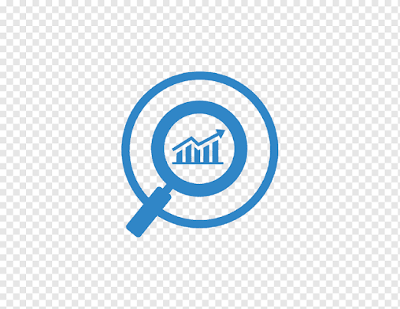

Joriy etish tajribasi
ERP • Odoo • Biznes avtomatlashtirish
Biznes jarayonlarini aniqroq va samaraliroq ishlaydigan ERP tizimlarga aylantiraman.
Odoo joriy etish, AS-IS / TO-BE modellashtirish, biznes jarayonlarni avtomatlashtirish va ishlab chiqarish, eksport, logistika, distribyutsiya, travel hamda konsalting loyihalarida raqamli transformatsiya bilan ishlaydigan ERP loyiha menejeri va Business Analyst.
Asosiy yo‘nalishlarim
Odoo ERP joriy etish
Biznes jarayonlarni avtomatlashtirish
AS-IS / TO-BE modellashtirish
Ishlab chiqarish va logistika loyihalari

▣ ERP Project
Manager ◉ Business
Analyst Odoo
Odoo
Consultant
Manager ◉ Business
Analyst
Consultant
Pozitsiya
ERP loyiha menejeri
Business Analyst / Odoo konsultant
Biznes ilovalar va avtomatlashtirish
Jarayon tahlili
Workflow dizayni
About me
Business logic first,
implementation second.
I specialize in ERP implementation, business analysis and digital transformation. My work is focused on understanding how a company operates, identifying weak points, describing AS-IS and TO-BE processes, and turning business needs into practical digital solutions.
I have worked on projects involving sales, warehouse, production, logistics, document workflow, websites and internal business automation.
Odoo + CRM + Apps
ERP modules, apps and CRM workflow setup and customization.
AS-IS
Current state process mapping and documentation.
TO-BE
Future state automation and responsibility design.
~10
Coordinated project team members across relevant projects.
Asosiy ekspertiza
ERP, tahlil, loyiha yetkazish va avtomatlashtirish.
Biznes discovery, talablar, loyiha koordinatsiyasi, joriy etish yordami va raqamli mavjudlik bo‘yicha amaliy tajriba.
ERP joriy etish
Odoo ERP, ERP logikasi, jarayon sozlash, access rights, workflow, biznes talablar va foydalanuvchilarni moslashtirish.

Biznes tahlil
AS-IS / TO-BE jarayon modellashtirish, talablarni yig‘ish, stakeholder intervyulari, jarayon optimizatsiyasi va hujjatlashtirish.
Loyiha boshqaruvi
Vazifalarni rejalash, loyiha koordinatsiyasi, jamoa kommunikatsiyasi, risk nazorati, muddat boshqaruvi va delivery monitoring.
Biznes jarayonlarni avtomatlashtirish
Automation of sales, warehouse, production, logistics, document workflow, reporting and custom business processes.
Veb-sayt va raqamli mavjudlik
Korporativ saytlar, mahsulot kataloglari, landing page’lar, digital brand presence va mijozga qaragan raqamli yechimlar.
Integratsiya va texnik koordinatsiya
ERP integratsiyalar, API workflow, 1C bilan bog‘liq integratsiya vazifalari va biznes hamda texnik jamoalar o‘rtasidagi kommunikatsiya.
Loyihalar / Case study
ERP, veb-sayt va avtomatlashtirish bo‘yicha tanlangan ishlar.
Har bir case sanoat konteksti, biznes jarayonlar, Akbarshohning roli va oshirib ko‘rsatilmagan amaliy biznes qiymatiga fokus qiladi.

Misni qayta ishlash / eksport
Infinity Copper Group
Ishlab chiqarish, ombor, xarid, sotuv va operatsion nazorat uchun yagona ERP ekotizimi.
Case study ochish ->
Biznesni raqamlashtirish
Softam
Ichki operatsiyalar va workflowlarni boshqaruv uchun aniqroq ko'rinadigan raqamli tizimga o'tkazish.
Case study ochish ->
Mebel ishlab chiqarish
Diran
Ishlab chiqarish jarayonlarini tizimlashtirish va Face ID integratsiyasi konteksti.
Case study ochish ->Tanlangan mijoz va loyiha kontekstlari
ERP, ishlab chiqarish, logistika, website va biznes avtomatlashtirish bo'yicha real portfolio ishlari.
Infinity Copper GroupSoftamDiranMedicomWarmixFayz Oil ImportsAPVOFTOS
Ish jarayoni
Biznes ehtiyojdan raqamli workflow’gacha aniq yo‘l.
ERP va avtomatlashtirish yechimlarini tahlil qilish, loyihalash va yetkazish uchun 5 bosqichli amaliy metodologiya.
Biznes discovery
Stakeholderlar bilan suhbat, maqsadlar, muammolar va mavjud jarayonlarni tushunish.
AS-IS tahlil
Mavjud jarayonlar, bottleneck, qo‘l mehnati, risklar va takroriy ishlarni xaritalash.
TO-BE dizayn
Yaxshilangan kelajak jarayonlari, avtomatlashtirish logikasi, ERP oqimlari va mas’uliyatlarni loyihalash.
Joriy etish koordinatsiyasi
Talablarni tayyorlash, texnik jamoani muvofiqlashtirish, vazifalarni kuzatish va delivery’ni nazorat qilish.
Ishga tushirish va yaxshilash
Joriy etishni qo‘llab-quvvatlash, feedback yig‘ish, workflow’larni yaxshilash va foydalanuvchilarga moslashishda yordam berish.
Ko‘nikmalar va vositalar
Biznes, loyiha, texnik va AI yordamidagi ishlar.
Biznes qiymat yaratish, loyihalarni boshqarish, muammolarni hal qilish va AI bilan samaraliroq ishlashda foydalanadigan tajribam va vositalarim.
ERP va biznes tizimlar
Odoo ERPAppSheetGlideBitrix24amoCRM1C integrationDidoxE-IMZOOnline paymentsHH integrationsERP ImplementationCRM setupBusiness AnalysisDigital TransformationAS-IS / TO-BEProcess OptimizationBiznes jarayonlarni avtomatlashtirishRequirements GatheringTechnical Documentation
Loyiha boshqaruvi
Project ManagementTask ManagementTeam CoordinationStakeholder ManagementRisk ManagementChange ManagementReportingDocumentation
Texnik / Vositalar
Python basics / backend understandingSQLPostgreSQLREST APIAPI integrationsGitLinuxDockerJiraNotionGoogle WorkspaceMS ExcelPowerPoint
AI vositalar
ChatGPTClaude.aiGoogle AI StudioCodexClaude CodeAI-assisted analysisAI-assisted documentationAI-assisted automation planningAI tools adoption for business teams
Tillar
O‘zbek: ona tili / advancedIngliz: advancedRus: intermediate / ishchi daraja
Tajriba
Biznes va texnik jamoalar bilan ERP hamda transformatsiya ishlari.
HozirgiRakat Systems
ERP va raqamli transformatsiya loyiha menejeri / Business Analyst / ERP konsultant
Ta’limChirchiq davlat pedagogika universiteti
Tarix / Jahon tarixi
▥
Rakat Systems
Ishlab chiqarish, eksport, logistika, travel, konsalting, distribyutsiya va korporativ yo‘nalishlardagi kompaniyalar uchun ERP joriy etish, biznes jarayonlarni avtomatlashtirish, veb-sayt loyihalari, AS-IS / TO-BE tahlil, loyiha koordinatsiyasi, mijoz kommunikatsiyasi va raqamli transformatsiya yechimlarida ishlaganman.
- Coordinated project teams of around 10 people.
- Worked with business owners, managers, users and technical teams.
- Prepared requirements and project documentation.
- Helped automate sales, warehouse, production, logistics and document workflow processes.
Odoo ERP kursi
ERP joriy etish logikasi va Odoo jarayon konfiguratsiyasi.
Full Stack Development kursi
Joriy etish va koordinatsiya uchun texnik asos.
Google Project Management kursi
Loyiha rejalash, delivery va stakeholder koordinatsiyasi.
Formal education
Chirchiq davlat pedagogika universiteti — Tarix / Jahon tarixi.